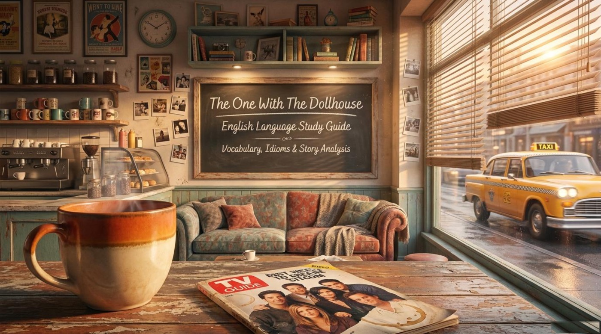
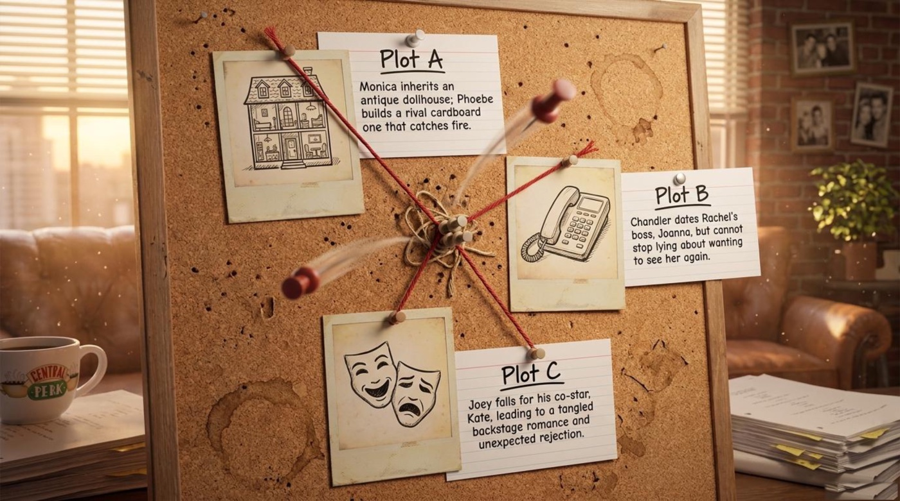
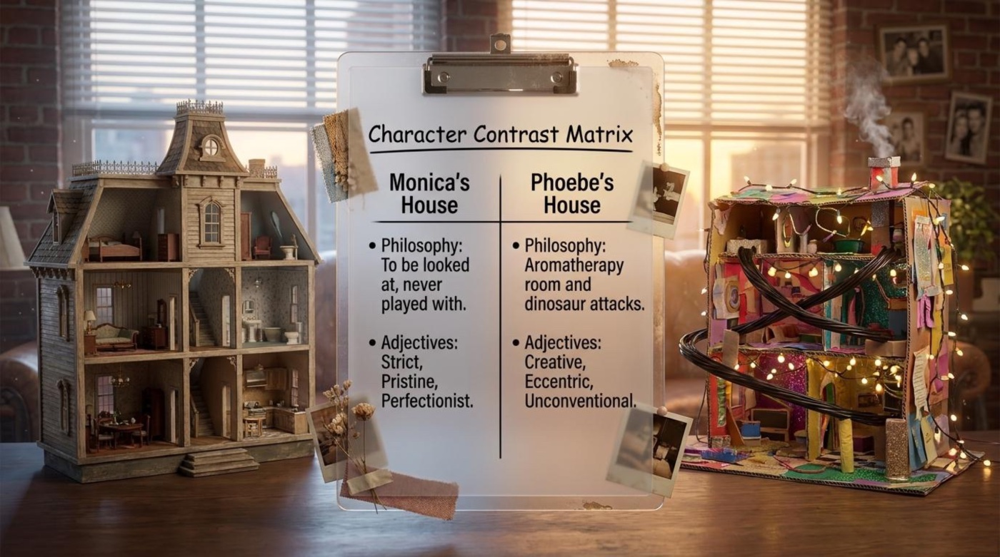
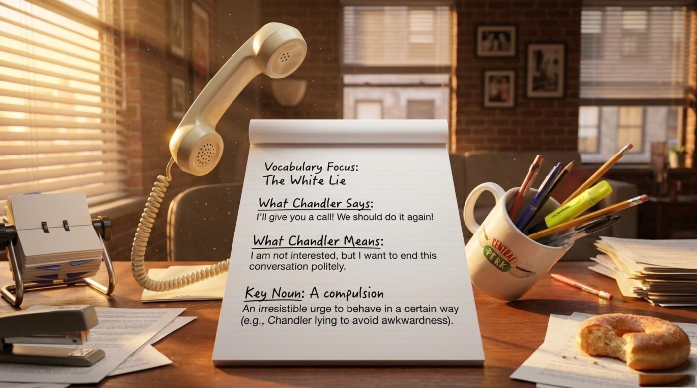
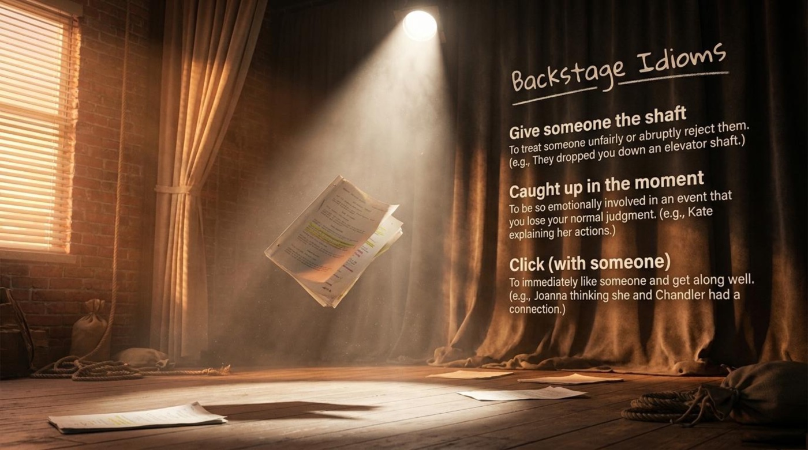
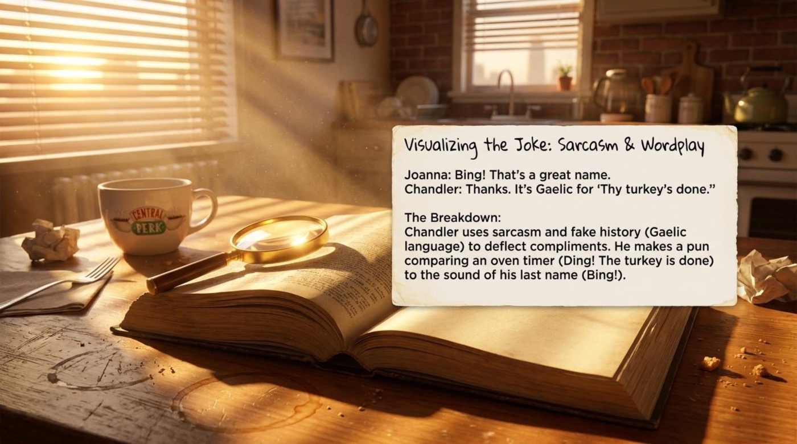
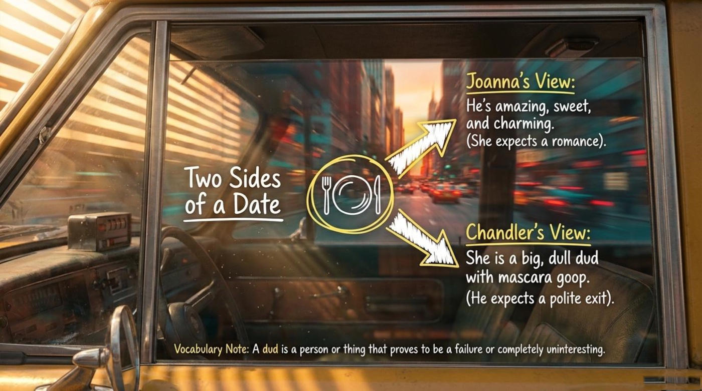
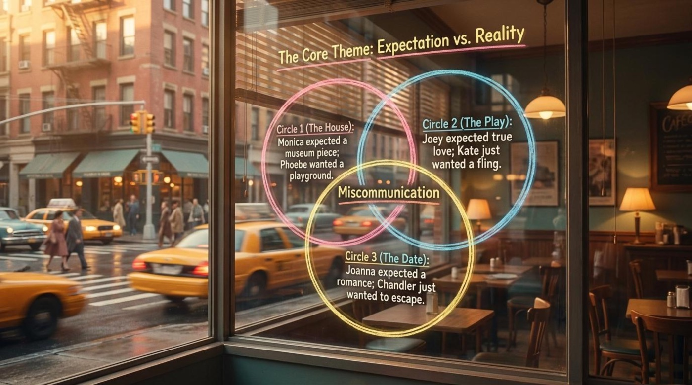
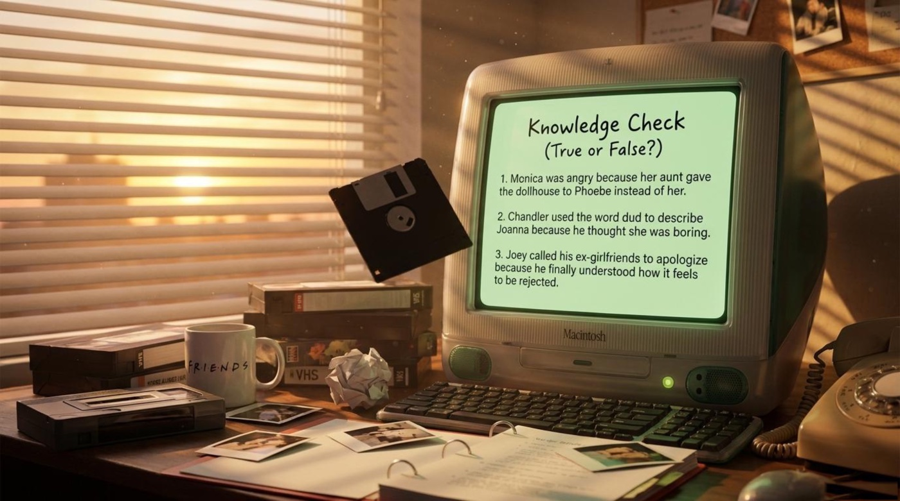
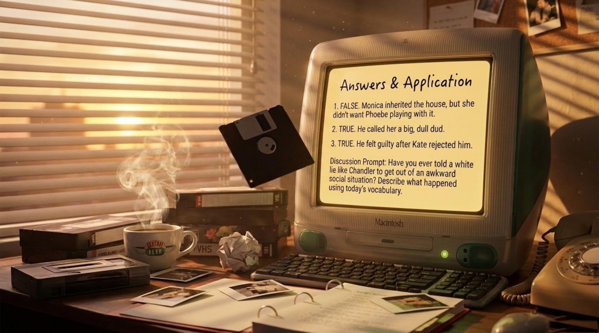

Dollhouses, White Lies and a Pun About Turkey: Master Everyday English Idioms with Friends – “The One with the Dollhouse”

Few television episodes pack three separate disasters into twenty-two minutes, and fewer still turn each disaster into a language lesson. 📺 “The One with the Dollhouse” does exactly that. A cardboard house catches fire, a telephone call goes terribly wrong, and an actor learns what rejection feels like.
This guide walks through the episode as an English language study guide. It covers the plot, the contrasting personalities, a handful of useful idioms, a sarcastic pun, and the central theme that ties everything together. By the end, the reader will own vocabulary that works in real conversations. 📚
📌 Section 1: Content and Context
The episode runs on three storylines that the guide calls Plot A, Plot B and Plot C. Each one is a small comedy about people who want different things from the same situation. That gap between wanting and getting is the engine of the humor, and it is also the engine of good storytelling vocabulary.

Plot A: “Monica inherits an antique dollhouse; Phoebe builds a rival cardboard one that catches fire.” Plot B: “Chandler dates Rachel’s boss, Joanna, but cannot stop lying about wanting to see her again.” Plot C: “Joey falls for his co-star, Kate, leading to a tangled backstage romance and unexpected rejection.”
Notice how each summary uses a simple verb pattern: a subject, an action and a complication. Practical tip: when summarizing any story in English, write one sentence per storyline and finish with the complication, just as these cards do. Pay attention to the useful verbs inherit, build, date and fall for.
🏠 Two Houses, Two Personalities

Monica’s House – Philosophy: “To be looked at, never played with.” Adjectives: “Strict, Pristine, Perfectionist.” Phoebe’s House – Philosophy: “Aromatherapy room and dinosaur attacks.” Adjectives: “Creative, Eccentric, Unconventional.”
The contrast matrix shows how a single object reveals character. In a real lesson scenario, a learner might describe the two houses aloud: “Monica’s house is pristine because she is a perfectionist; Phoebe’s house is eccentric because she is unconventional.” Remember that adjectives are the fastest way to turn a picture into a paragraph. 💡 Try building your own matrix for two people you know.
🤥 Chandler and the White Lie

What Chandler says: “I’ll give you a call! We should do it again!” What Chandler means: “I am not interested, but I want to end this conversation politely.” Key noun: “A compulsion – an irresistible urge to behave in a certain way (e.g., Chandler lying to avoid awkwardness).”
It is important to understand that English speakers often say the opposite of what they feel in order to protect someone’s feelings. The phrase “We should do it again” is a classic white lie. The key point is that the words are friendly while the meaning is a polite goodbye. Chandler’s problem is a compulsion: he cannot stop himself.
🎭 Backstage Idioms

“Give someone the shaft – To treat someone unfairly or abruptly reject them. (e.g., They dropped you down an elevator shaft.)” “Caught up in the moment – To be so emotionally involved in an event that you lose your normal judgment. (e.g., Kate explaining her actions.)” “Click (with someone) – To immediately like someone and get along well. (e.g., Joanna thinking she and Chandler had a connection.)”
Each idiom comes with an example from the episode, which makes the meaning easy to remember. Interestingly, the shaft idiom contains a visual joke: the example imagines someone falling down an elevator shaft. Practical advice: attach every new idiom to one memorable scene, and the phrase will return the next time a similar moment occurs.
😏 Sarcasm and Wordplay

Joanna: “Bing! That’s a great name.” Chandler: “Thanks. It’s Gaelic for ‘Thy turkey’s done.’” The breakdown: “Chandler uses sarcasm and fake history (Gaelic language) to deflect compliments. He makes a pun comparing an oven timer (Ding! The turkey is done) to the sound of his last name (Bing!).”
The joke works because “Bing” and “Ding” sound alike, so a surname becomes an oven timer. Notice that Chandler also invents a language fact. Pretending to share an absurd “fact” is a typical way of using sarcasm to avoid accepting praise. A pun is a joke built on similar sounds, and spotting one is a sign of advanced listening.
🍽️ Two Sides of a Date

Joanna’s view: “He’s amazing, sweet, and charming. (She expects a romance).” Chandler’s view: “She is a big, dull dud with mascara goop. (He expects a polite exit).” Vocabulary note: “A dud is a person or thing that proves to be a failure or completely uninteresting.”
The same dinner produces two opposite reports. The lesson here is that point of view changes vocabulary: Joanna chooses amazing, sweet and charming, while Chandler chooses dull and dud. When describing an event in English, it helps to ask whose perspective the sentence belongs to, and then choose adjectives to match.
🔍 The Core Theme: Expectation vs. Reality

Circle 1 (The House): “Monica expected a museum piece; Phoebe wanted a playground.” Circle 2 (The Play): “Joey expected true love; Kate just wanted a fling.” Circle 3 (The Date): “Joanna expected a romance; Chandler just wanted to escape.” At the center: “Miscommunication.”
All three plots overlap in one word: miscommunication. 💡 The takeaway for learners is practical. Many awkward conversations happen because two people use the same words with different expectations, so clear, honest phrasing saves time and feelings.
📝 Teacher’s note: 🎓 No teacher transcript was supplied with these materials, so this article relies on the lesson slides alone.
✅ Knowledge Check and Application


Answers: “FALSE. Monica inherited the house, but she didn’t want Phoebe playing with it.” “TRUE. He called her a big, dull dud.” “TRUE. He felt guilty after Kate rejected him.” Discussion prompt: “Have you ever told a white lie like Chandler to get out of an awkward social situation? Describe what happened using today’s vocabulary.”
The final exercise invites a personal story. A sample answer might sound like this: “I told my neighbor we should have coffee sometime, but I only wanted to end the chat. It was a white lie, and I felt a bit guilty.” Writing three to four sentences like these is the best way to turn passive knowledge into active speech.
📚 Section 2: Vocabulary and Language Takeaways
Six items carry the lesson. Each one connects to the theme of saying one thing and meaning another. The plain-text notes below come first, followed by flip-cards for self-testing.
The white lie — Literal: a lie that is white in color, which has no real meaning. Figurative: a harmless untruth told to be polite. Example: “I’ll give you a call! We should do it again!” The lesson explains it as: “I am not interested, but I want to end this conversation politely.”
A compulsion — Literal: a force that pushes. Figurative: an urge too strong to resist. Example: Chandler cannot stop lying. The lesson defines it as “An irresistible urge to behave in a certain way.”
Give someone the shaft — Literal: push someone into an elevator shaft. Figurative: treat someone unfairly or reject them abruptly. The lesson example: “They dropped you down an elevator shaft.”
Caught up in the moment — Literal: trapped inside a moment. Figurative: so emotional that normal judgment disappears, as when Kate explains her actions.
Click (with someone) — Literal: a short sharp sound. Figurative: to like someone instantly. Example: Joanna believed that she and Chandler had a connection.
A dud — Literal: a bomb or firework that fails to explode. Figurative: a person or thing that proves to be a failure or completely uninteresting. The lesson says so in its vocabulary note, and Chandler applies it to Joanna.
🧩 Section 3: Deeper Meaning — Metaphors and Symbols
1. The two dollhouses. The slide labels Monica’s house “To be looked at, never played with” and Phoebe’s house “Aromatherapy room and dinosaur attacks.” The houses are symbols of two attitudes toward life: preserving things versus using them. 🏠
2. The telephone. The phone stands for the white lie itself. The words “I’ll give you a call!” travel through the line, but the real message stays hidden. It illustrates how polite language can act as a mask. 📞
3. The three overlapping circles. The diagram places “Miscommunication” where the circles meet. The overlap symbolizes the idea that every plot shares the same root problem. ⭕
4. The theater masks and the spotlight. The comedy and tragedy masks beside Joey’s plot, together with the backstage spotlight, symbolize the thin line between performing a feeling and feeling it. Kate was “caught up in the moment,” and Joey learned how rejection hurts. 🎭
🧠 Section 4: Comprehension Check
The quiz below tests the plot, the idioms and the vocabulary in context. Each answer gives instant feedback, and the final screen shows a score with a short message.
🌟 Conclusion
The episode ends where it began: with people who expected one thing and received another. As the lesson puts it, the core theme is “Expectation vs. Reality.” Language is the bridge between the two, and idioms such as click, give someone the shaft and caught up in the moment make that bridge much shorter. 🌉
The main takeaway is simple: honest, precise words prevent miscommunication, and a good white lie is still a lie. Practice by writing your own story with today’s vocabulary, rewatch the episode with subtitles, and notice every moment where the words and the meaning point in different directions. 🚀